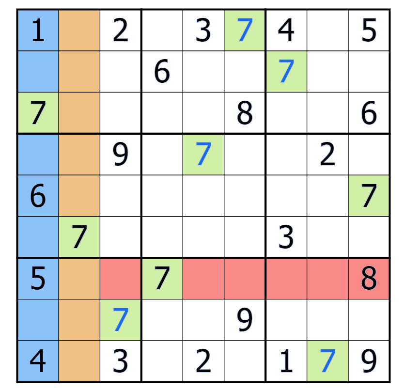
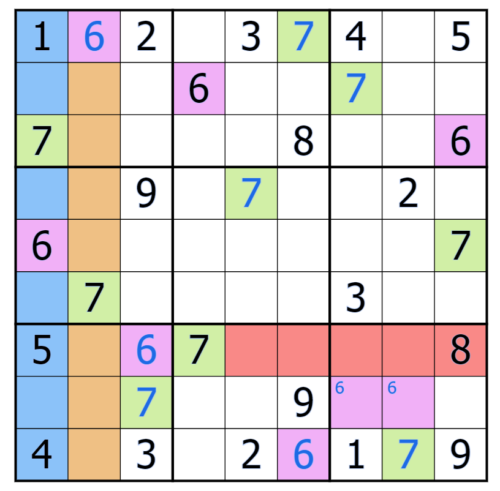

Most of this webpage is made for complete beginners at Sudoku.
In normal sudokus, you are given a 9x9 grid, as shown below:
Positions on this grid can be described with rows (lines of squares going
horizontally, aka R) and columns (lines of squares going vertically, aka C).
For example, the third square in the first small 3x3 box would be written as R1C3.
Your job is to fill in every column, row, and outlined 3x3 box with the digits
1 to 9. That might be a little bit hard when you don't have any numbers to use
as a guideline though, so let's fix that!
This puzzle may seem unbreachable at first--it looks completely barren! Thankfully, those specific digits allow us to use the most basic sudoku strategy of them all: process of elimination.
Notice that three of the 7s on the grid (R3C1, R6C2, R7C4) intersect a square without a 7. Because we know that each digit can only go into each row, column, and square once, we can deduce that the 7 in that empty square must go in R8C3.
We can use this same strategy to find the rest of the 7s ...
... and then you can use that same logic to find the 6s, and so on, until you've done this with every number on the grid.
This is the most basic of sudoku solving basics, and unfortunately, this website wouldn't do the intricacies of classic sudoku justice (for this, I direct you to Sudoku9981). However, many sudoku variants don't usually rely on the viewer knowing high-level techniques--instead, you use the logical clues given to you by the variant's setter. When classic sudoku logic does appear, it will usually be on the level of the puzzle given here (though you will occasionally see cases of Swordfishes or Phistomefel's Rings).